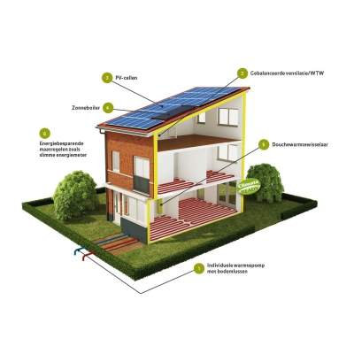

De kaartlaag beschrijft de gemiddelde kostenbesparing als gevolg van het gebruik van een warmtepomp ten opzichte van aardgas, in euro’s per jaar per woning. Met behulp van een warmtepomp kan in de warmte (en eventueel koude) worden voorzien op basis van elektriciteit. Een CV ketel is dan niet meer nodig en in principe is er geen aardgasaansluiting meer nodig (“all-electric”). De warmtepomp levert het hoogste rendement bij een lage temperatuur warmtevraag, en wordt dus bij voorkeur toegepast in combinatie met maximale energiebesparing (label A+)
De data voor deze kaartlaag is berekend met behulp van het Vesta model (eigenaar: PBL) op basis van het Geomarktprofiel 2006 (gegevens over woningtype en bouwjaar), welke weer gebaseerd is op de gemeentelijke basisadministratie. Op basis van de Voorbeeldwoningen van AgentschapNL (2011) is vervolgens berekend welke capaciteitsvraag daarbij hoort en wat dit betekent voor het elektriciteitsverbruik. De besparing wordt uitgedrukt ten opzichte van de kosten door verwarmen met aardgas. Ook de investeringskosten zijn berekend
Deze kaartlaag beschrijft de gemiddelde kostenbesparing als gevolg van het gebruik van een warmtepomp ten opzichte van aardgas, in euro’s per jaar per woning.
Deze kaartlaag beschrijft de gemiddelde investeringskosten voor een warmtepomp in euro’s per woning.
Deze kaartlaag beschrijft de gemiddelde toename in elektriciteitsverbruik door een warmtepomp in percentage per woning. NB: door het gebruik van een warmtepomp is er geen aardgas meer nodig voor de verwarming.
Deze kaartlaag beschrijft de gemiddelde simpele terugverdientijd (investeringskosten gedeeld door jaarlijkse baten als gevolg van energiebesparing) voor een warmtepomp in jaren per woning.